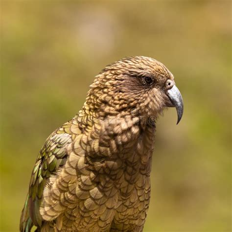

Keas are large, playful parrots from New Zealand known for their intelligence and mischievous behavior. They have olive-green feathers with bright orange underwings, and their beaks are long and curved, helping them dig for food. Keas are exclusively found in the South Island of New Zealand.
